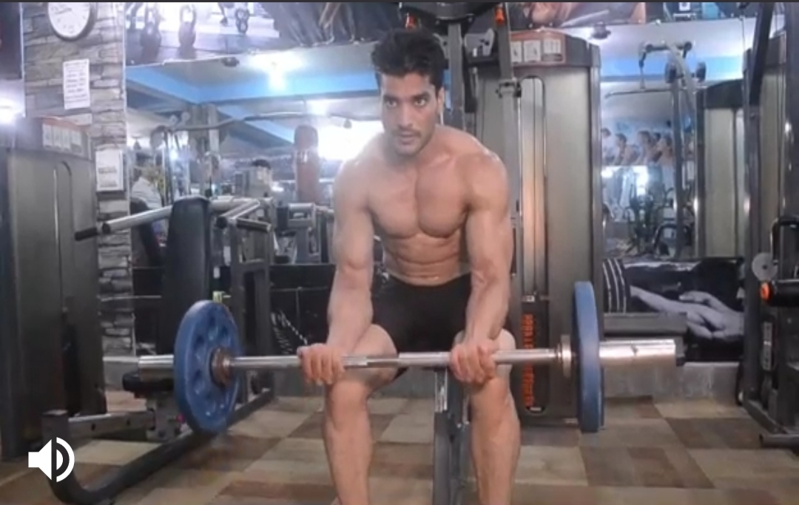
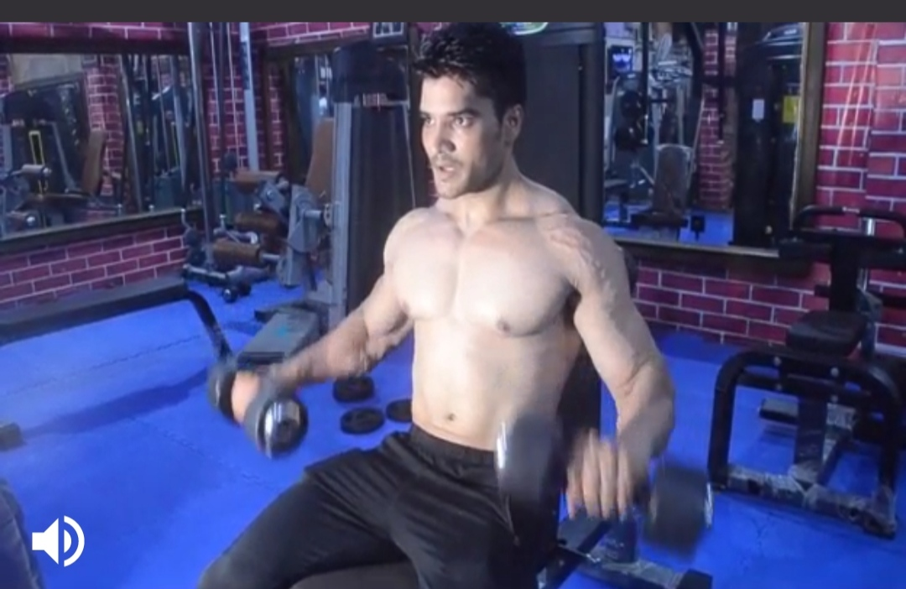
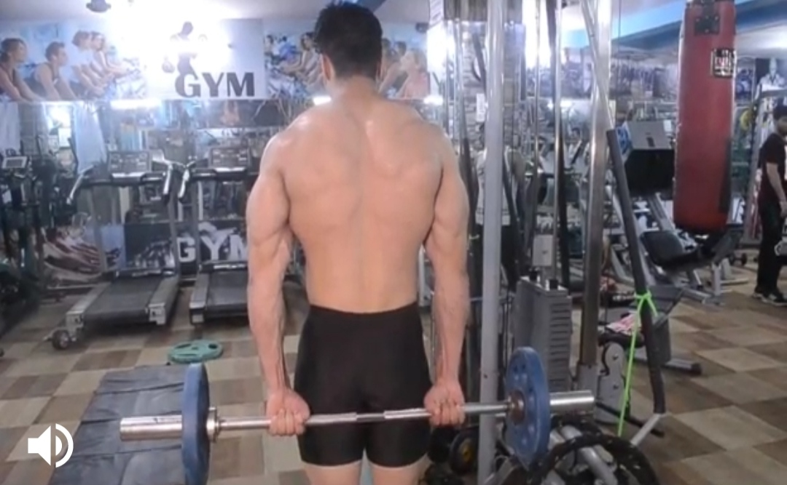
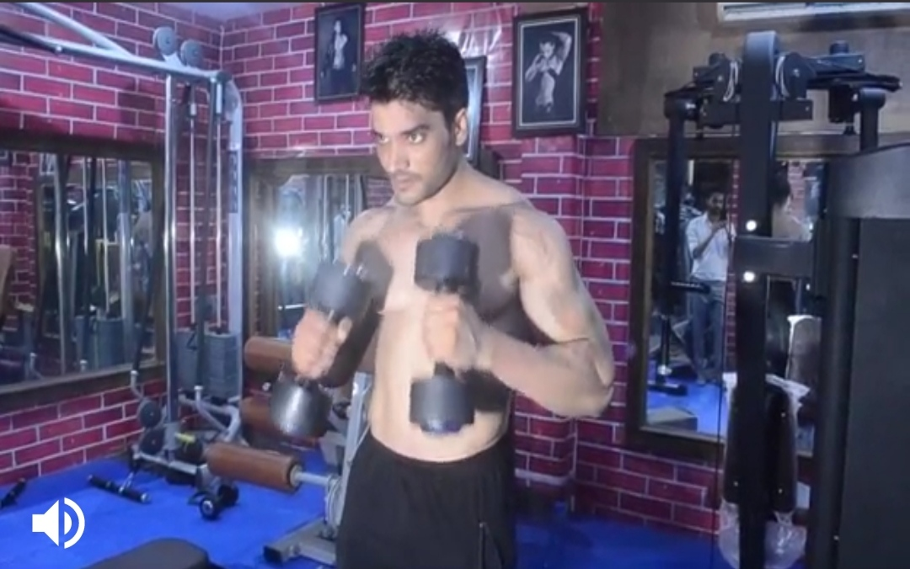

Barbell Wrist Curl
Body Parts:Forearm
Description:
1) Grasp a barbell at shoulder width apart using an underhand grip and sit down on the end of a flat bench.
2) Rest the back of your forearms on the top of your thighs so that your wrists are just off the end of your knees.
3) Bending only at the wrists, let the barbell drop as far as possible. This is the starting position for the exercise.
4) Slowly raise the bar up as far as possible squeezing the forearm muscles at the top of the movement.
5) Pause, and then slowly lower the barbell back to the starting position.
6) Repeat for desired reps.
-----------------------------------------------------------------------------------------------------------------------------------------------------------------


Dumbbell Curl
Body part:Forearm
Description
1) Assume the starting position for the standing dumbbell curl by grasping a pair of dumbbells and standing straight up,
feet together and dumbbells by your side. The dumbbells should not be touching your body.
2) Your palms should facing upwards.
3) Take up the slack by bending the elbows slightly.Tension should be on the biceps.
4) Slowly curl the dumbbells up as far as possible.
5) Squeeze the biceps hard, and then slowly lower the dumbbells back down to the starting position. 6) Repeat for desired reps.
---------------------------------------------------------------------------------------------------------------------------------------------------------------------------------------


Standing Barbell Behind The Back Wrist Curl
Body part:Forearm
Description
1) Stand with your feet shoulders width apart.
2) Grasp the barbell in your hands with your palms facing outwards.
3) Lift the barbell up and down using only your hands while keeping your arms straight.
-------------------------------------------------------------------------------------------------------------------------------------------------------------------------------


Hammer curl
Body parts:Forearm
Description
1) Stand up with your torso upright and a dumbbell on each hand being held at arms length. The elbows should be close to the torso.
2) The palms of the hands should be facing your torso. This will be your starting position.
3) Now, while holding your upper arm stationary, exhale and curl the weight forward while contracting the biceps.
Continue to raise the weight until the biceps are fully contracted and the dumbbell is at shoulder level.
Hold the contracted position for a brief moment as you squeeze the biceps. Tip: Focus on keeping the elbow stationary and only moving your forearm.
4) After the brief pause, inhale and slowly begin the lower the dumbbells back down to the starting position.
5) Repeat for the recommended amount of repetitions.
-------------------------------------------------------------------------------------------------------------------------------------------------------------------------------------------